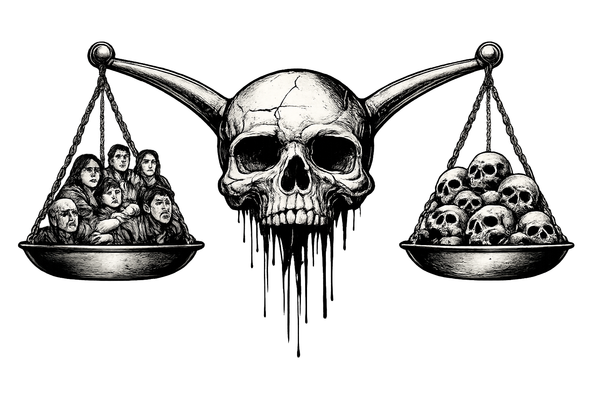

Fundación y expansión de las AUC (1997): Participó en la creación de las AUC, una organización que unificó distintos grupos paramilitares y se expandió por gran parte del territorio colombiano

Responsabilidad en la masacre de Mapiripán (1997): Carlos Castaño reconoció públicamente su responsabilidad en esta masacre, en la que paramilitares asesinaron y desaparecieron a civiles en el municipio de Mapiripán.

Condena por el asesinato de Jaime Garzón: Fue condenado en ausencia por su participación en el homicidio del periodista y humorista ocurrido en 1999.